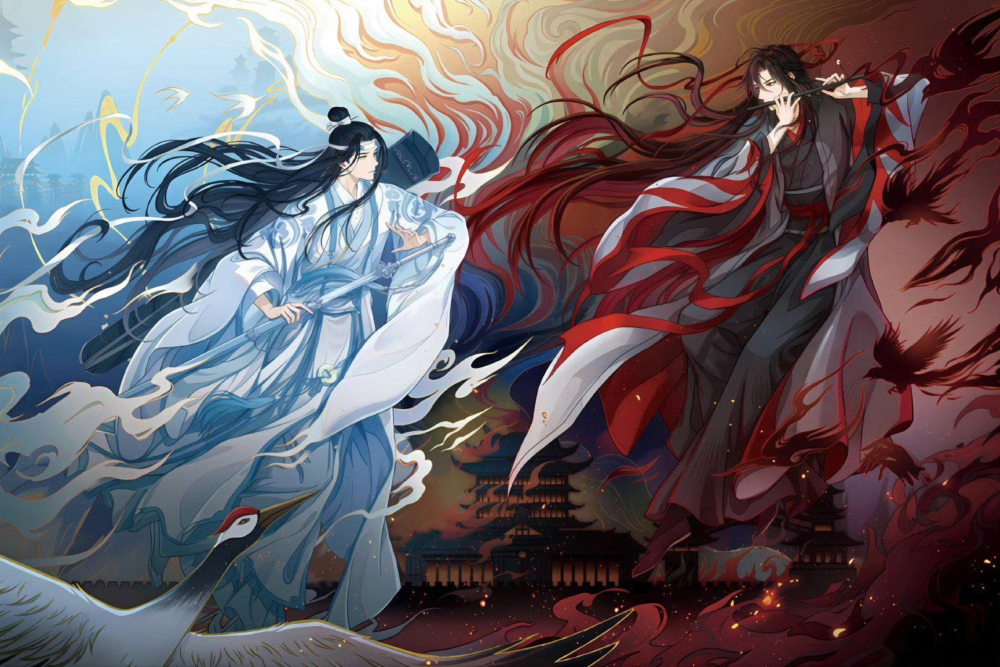

Ma đạo tổ sư (tiếng Trung: 魔道祖师) là một bộ tiểu thuyết đam mỹ về chủ đề tiên hiệp của tác giả Mặc Hương Đồng Khứu (Tiếng Trung: 墨香铜臭), được phát hành đầu tiên qua trang mạng văn học Tấn Giang của Trung Quốc.